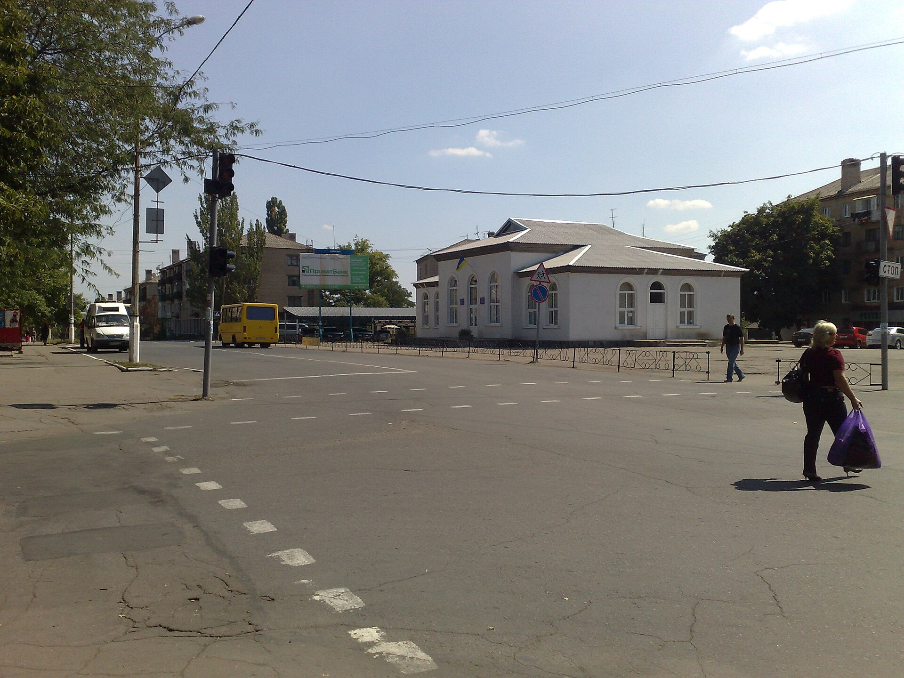
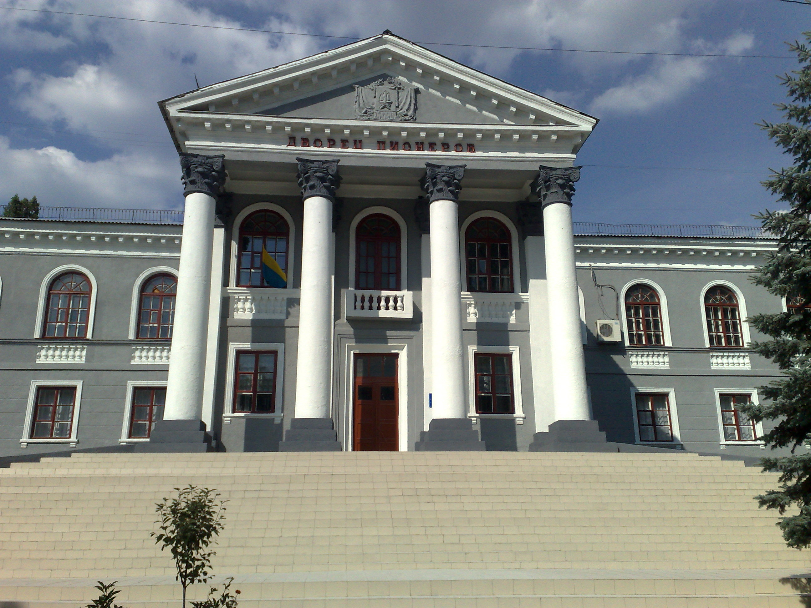
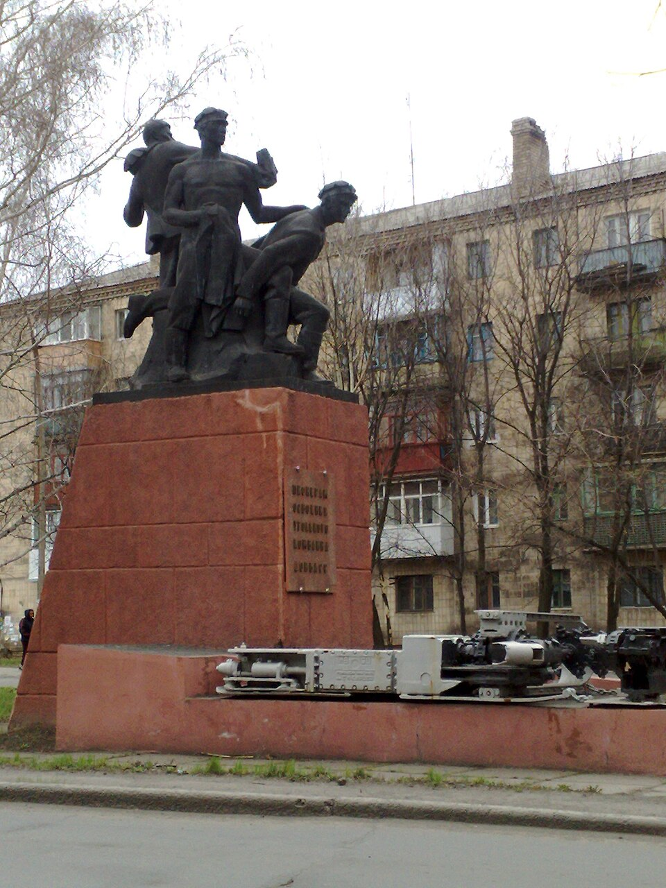
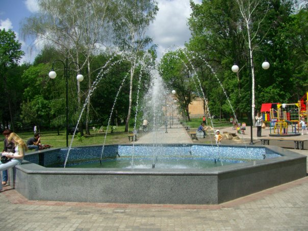
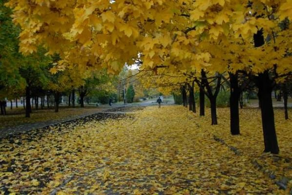
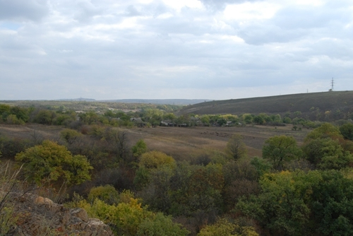

Благоустройство города
В городе проводятся работы по благоустройству общественных территорий и жилых районов.
 ТОРЕЗ
ТОРЕЗ
Торез — город с богатой историей и шахтёрскими традициями. Его развитие тесно связано с угольной промышленностью и формированием крупных рабочих посёлков.
Сегодня город сочетает промышленное прошлое, жилые районы, объекты культуры и общественные пространства.






В городе проводятся работы по благоустройству общественных территорий и жилых районов.
В учреждениях культуры проходят концерты, выставки, творческие встречи и праздничные мероприятия.
История города насчитывает более двух столетий. Особенно большое влияние на его развитие оказала добыча каменного угля.
Рост угледобычи привёл к появлению шахт, рабочих посёлков и развитию городской инфраструктуры.